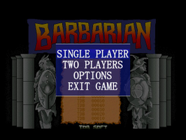
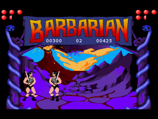

Barbarian
Dieser Artikel wurde für die folgenden Ubuntu-Versionen getestet:
Ubuntu 14.04 Trusty Tahr
Zum Verständnis dieses Artikels sind folgende Seiten hilfreich:
Barbarian (auch Death Sword) ist ein Klassiker, aus der Zeit des Commodore 64. TDB Soft  erstellt Freeware-Remakes und produzierte eine Neuauflage von Barbarian.
erstellt Freeware-Remakes und produzierte eine Neuauflage von Barbarian.
Im Einzelspielermodus tritt man gegen diverse Gegner an. Nachdem man den Zauberer Drax besiegt hat kann man Prinzessin Marina befreien. Im Mehrspielermodus tritt man gegeneinander an.
|  |  |
| Hauptmenü | Spielszene |
Installation¶
Zur Installation von Barbarian Linux muss als erstes das Paket
libstdc++5:i386 (universe)
 mit apturl
mit apturl
Paketliste zum Kopieren:
sudo apt-get install libstdc++5:i386
sudo aptitude install libstdc++5:i386
installiert [1] werden.
Dann das Spiel von tdbsoft.com herunterladen und entpacken [2]. Nun die Rechte [3] der Datei Barbarian ändern [4]:
sudo mv barbarian101lin /opt/Barbarian # verschiebt den Ordner sudo chmod +x /opt/Barbarian/Barbarian # Ausführrechte setzen
Anschließend muss mit Root-Rechten noch ein Startskript /usr/local/bin/Barbarian angelegt [5] und ausführbar gemacht werden:
1 2 3 | #!/bin/bash cd /opt/Barbarian ./Barbarian |
sudo chmod a+x /usr/local/bin/Barbarian # Ausführrechte werden gesetzt
Bedienung¶
Nach dem Spielstart gelangt man über ⏎ in das Menü. Über die Tasten ↑ und ↓ wählt man den Menüpunkt aus und öffnet diesen mit ⏎ . Ein laufender Kampf kann mit Esc unterbrochen werden. Man landet hier wieder im Menü.
| Menü | |
| Menüpunkt | Beschreibung |
| "single player" | Kampf um die Prinzessin gegen die bösen Diener von Drax und letztendlich gegen ihn persönlich. |
| "two players" | Zweikampf |
| "options" | In der Linuxversion nicht verfügbar. |
| "exit game" | Spiel beenden. |
Die Steuerung der Kämpfer und die Manöver sind schnell erlernt.
Tipps¶
Sofern man möchte können unter /opt/Barbarian/gfx eigene Sprites und Hintergründe abgelegt werden um dem Spiel eine persönliche Note zu verpassen.
Deinstallation¶
Um das Spiel zu entfernen, sind folgende Schritte notwendig [3]:
sudo rm -dr /opt/Barbarian #löscht den Programmordner sudo rm /usr/local/bin/Barbarian #löscht den Link
Tastenkürzel¶
Steuerung¶
| Steuerung | ||
| Beschreibung | Spieler 1 | Spieler 2 |
| Feuerknopf A | , | Z |
| Feuerknopf B | . | X |
| Auf | ↑ | F |
| Rechts | → | B |
| Ab | ↓ | V |
| Links | ← | C |
Bewegungsabläufe¶
Die Bewegungsabläufe für den rechten Spieler. Für den linken Charakter sind diese entgegengesetzt durchzuführen.
| Bewegungen | |
| Taste(n) | Manöver |
| → | Vorwärtsbewegung |
| ← | zurück bewegen |
| ↑ | springen |
| ↓ | ducken |
| → + ↓ | Rolle vorwärts |
| ← + ↓ | Rolle rückwärts |
| Z + ↑ | Schlag Nacken |
| Z + → | Schlag Kopf |
| Z + ↓ | Schlag Bein |
| Z + ← | Fliegender Nackenschlag |
| X + ↑ | Kopfstoß |
| X + → | Überkopf schlagen |
| X + ↓ | Tritt |
| X + ← | Netz des Todes |
| → + ↑ | Körper schützen |
| ← + ↑ | Kopf schützen |


- Erstellt mit Inyoka
-
 2004 – 2017 ubuntuusers.de • Einige Rechte vorbehalten
2004 – 2017 ubuntuusers.de • Einige Rechte vorbehalten
Lizenz • Kontakt • Datenschutz • Impressum • Serverstatus -
Serverhousing gespendet von